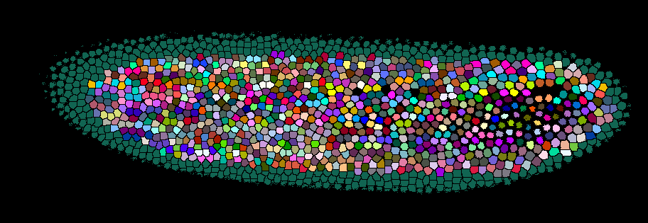

3D Image Analysis#
Lab authors: Hunter Elliott, Damian Dalle Nogare and Florian Jug .
This file last updated 2024-04-10.
Learning Objectives#
Visualizing 3D data in Fiji and napari
Basic segmentation on 3D images
Image registration for 3D reconstruction
Some ways to segment in 3D
Lab Data: https://tinyurl.com/qi2024labs
Visualizing 3D data in napari#
If not already done (on lab computers we have prepared it all), please install napari by following these instructions.
Sadly, there are many ways to start napari (see here). On our lab machines this means to:
Open an Anaconda prompt.
Type
conda activate cellposeto activate a conda environment we have prepared for you.Type
napariand hit enter!
Out of the box, napari doesn’t like to open images in usefuls ways. But behold, there is a solution. You can install a plugin that allows you to open many file-types the right way. (Feel free to go on without installing this plugin and you will see what we are taling about). To install the plugin go to
Plugins > Install/Unistall Plugins, then filter foraicsimageio. Then click on “install” and restart napari.In napari, load the file
Drosophila_zstack-20x-medium.tif, a 3-channel, 3D volume. When it asks you which image loader to use, select the one we just installed.You can now switch to the 3D viewer by clicking on the 2D/3D toggle button (second from the left).

Play around a bit, rotate the volume, change a few viewing options… enjoy!

Visualizing 3D data in Fiji#
Open Fiji
Load
Drosophila_zstack-20x-medium.tif. As before, this is a 3-channel, 3D volume. The default visualization shows one z-plane and one channel at a time. There are a few other ways to visualize 3D data, some of which are listed below. Try them out, and see what are their advantages and disadvantages.Orthogonal Views. Go to
Image > Stacks > Orthogonal Views. What are we seeing here? Can you understand what each window shows you? In which view is easiest to see the separation between nuclei? Why might that be?
BigDataViewer. BDV is a “re-slicing” viewer that is included with Fiji and you can view your stack in it by going to
Plugins > BigDataViewer > open current image. What might be the pros and cons of viewing images like this compared to a 3D view like in napari?Do you see anything suspicious about the intensity values in this image when you rotate it in BDV? If so, can you think of some possible explanations for this?
3D Object Segmentation, Shape and Intensity Measurements#
Close all secondary Fiji windows and reload
Drosophila_zstack-20x-medium.tif.Split the three channels by going to
Image > Color > Split Channels. Close all but the second channel, which corresponds to nuclei. We are going to segment these nuclei via 3D marker-controlled watershed. As in 2D, we’ll need 3 “images”: marker, watershed surface, and mask. Typically we use nuclei as markers to segment cells, but here we will get all three images from the same source. Change the image type to 32-bit (Image > Type > 32-bit). Create 3 copies of the stack (viaImage > Duplicate), naming them “surface”, “mask”, and “marker”. (Make sure the “duplicate stack” option is checked.)Watershed surface. Select the “surface” image. We can use the inverted nuclei channel as watershed surface (remember the watershed algorithm floods a surface from dark to bright areas). To make the segmentation smoother, however, we need to blur the image a bit. This is done via
Process > Filters > Gaussian Blur 3D. Notice that now there are 3 sigmas to set, one for each dimension, and that they are in ‘voxel’ units, not microns. Should the 3 sigmas be the same? To answer this, go toImage > Propertiesand check the voxel size in x,y, and z. Now go toProcess > Filters > Gaussian Blur 3D. Choose an appropriate sigma, and apply the filter. Visualize the result in 3D. Try other sigmas (appropriately scaled) if necessary. Now invert the image:Edit > Invert. This is the watershed surface. To clean up your workspace, save it (File > Save as > Tiff) and close it.Mask. This will restrict the area into which the watershed regions will grow. It can be obtained by thresholding a blurred version of the nuclei image, where the sigmas are a bit larger than the ones used above. Select the “mask” image. Apply a 3D gaussian filter (
Process > Filters > Gaussian Blur 3D), with sigma a bit larger (say 50%) than the one used above. Threshold the result (Image > Adjust > Threshold). Choose a threshold such that the resulting mask contains all the nuclei, then click Apply. If prompted, click Convert to Mask. To clean up your workspace, save the result (File > Save as > Tiff) and close it.Marker. To find markers, we will treat the nuclei as “point sources”, and detect them by finding local maxima in the Laplacian of Gaussian image. Select the “marker” image. We now compute the proper sigma to locate the nuclei. We want to detect nuclei, so what should we measure to determine this sigma? Now go to
Plugins > FeatureJ > FeatureJ Laplacian, adjust the smoothing scale (don’t forget about the voxel calibration!), and click OK. Candidates for markers are the local minima in the resulting filtered image. To find them, go toPlugins > MorphoLibJ > Minima and Maxima > Regional Min & Max 3D. Select Regional Minima with Connectivity 26 and click Ok. What do you think? Too many point sources in the background? We can filter them using our previously computed mask. Load “mask” by dragging it into Fiji. Now go toProcess > Image Calculator. And multiply the mask by the image with point sources. Save the result as “marker”.Hint
MorphoLibJ might not be installed in your Fiji. You can, and will have to, install it by activating the
IJPB-pluginsplugin site.Watershed. Now close all secondary windows and load the “surface”, “mask”, and “marker” images. Go to
Plugins > MorphoLibJ > Segmentation > Marker-Controlled Watershed. Set Input, Marker, and Mask appropriately. Check all checkboxes. Click Ok.Bonus: Can you overlay the original image and watershed segmentation to visualize them simultaneously in 3D?
question
You had to make some decisions on parameters and if anything is off, things might not turn out very convincing. How well did this work for you? Below a screenshot of one result we got… is your result comparable?
Shape Measurements. Select the watershed image. Go to
Plugins > MorphoLibJ > Analyse > Analyze Regions 3D. Select desired shape measurements and click Ok.Intensity Measurements. Go to
Plugins > MorphoLibJ > Analyze > Intensity Measurements 2D/3D. Which image should you set as Input? Which as Labels? Check the desired measurements and click Ok.
3D Crop#
This is useful if the data size is big and you want to rapidly test your analysis options before applying them to the larger set.
Re-open the image you’ve been working with. Go to
Image > Color > Split Channels. Select channel 2. Go toPlugins > Stacks > Crop (3D). Check “Three pane view” and uncheck “Change origin”. Click Ok. In the Crop Options window, check all options under “Also crop these images”. Set the bounding boxes as desired and click Crop.Merge the resulting channels (
Image > Color > Merge Channels), and visualize the result in 3D if interested.
Registration for 3D Volume Reconstruction#
Open the
mouse_brain_sections_downsampled32x_arpy.ome.tifstack. You’ve seen a single tissue section from this brain before, but now we’re going to try to visualize the entire brain.Visualize this stack in in some way. This should look like most of a mouse brain but likely appears “squished”. Why? Look at the voxel dimensions - the actual voxel size in this image is (x,y,z) = (10.5,10.5,40) microns - adjust the voxel size (find out how if you don’t know) and try again! Remember the discussion of voxel size calibration.
Notice the misalignment between the tissue sections - this gives the brain a rough outline. You can also see this by scrolling through the image stack with the ImageJ viewer. We can fix this!
Duplicate the original image stack. We will apply a stack registration to this duplicated stack. The plugin we will utilize will use the currently selected slice in the currently selected stack as a reference to register all the other slices, so scroll to a slice you think would serve as a good reference. Then, go to
Plugins > Registration > StackReg(if StackReg is not installed, add ‘BIG-EPFL’ to the list of update sites, then update and restart Fiji). What kind of transform do you think is best to align all these slices? Select it and then click OK. Be patient - it will take some time to finish.Note
If you ever have to register multi-channel images, there is a plugin called “HyperStackReg”. You can find it here and the installation instructions are on that page as well.
Now visualize the registered stack and compare it to the original. Does it look better? What might be necessary to further improve the registration?
3D Pixel Classifier Choose-your-own-adventure#
The goal here is to use machine learning to attempt to segment closely spaced nuclei. You have two options for how to proceed. For example, ilastik or Labkit. If you have time, try both!
Labkit#
Labkit can also perform 3D segmentation with a random forest pixel classifier, and it lets you work right in Fiji, which must feel like home at this point. It visualizes the data with BigDataViewer (which you used earlier, more info here) and can handle very large datasets. There is more info on Labkit available here.
This step is not needed on the course computers, but on a new machine, you can install Labkit by going to
Help > Updateand add the “Labkit” update site, and restart Fiji.Open
drosophilus_floriansus.tifand then go toPlugins > Labkit > Open current image. You can access more options for viewing the data by clicking “settings” in the upper left corner.After you’ve annotated a few areas of foreground and background, in the lower left “Segmentation” box you’ll need to select the pixel classifier and click the
▶button to train the model and see the current result.To handle large datasets, the dataset is broken up into blocks and Labkit only makes predictions on the currently visible blocks. When your done, if you want to export the entire segmentation, click the drop-down arrow next to the pixel classifier in the lower left window - there you’ll see options to segment the entire dataset and save the result.
ilastik#
Open
drosophilus_floriansus.tif. If you want to keep things simple you can select a few crops in a small area containing a few dozen nuclei. Export the image to .tiff usingFile > Save as > .tiff.Create a new pixel classification project in ilastik and load in the .tiff stack. Train a model that highlights the nuclei. What classes should you label? What output of the model should you use as watershed surface?
When you’re done, try loading the result into Fiji or napari and look at the result!
Are we happy with these results?#
Are your nuclei all perfectly separated? If not, what method have you learned that might help you split them? What output of the model would you use to do that?
Have you learned about other machine learning approaches that might handle closely spaced nuclei better? What are they and what are their pros and cons relative to this approach?
Once you’re happy with your result, export the segmentation and overlay it with the raw data as a composite image. Then visualize it with your favorite 3D visualization tool from earlier in the lab.
3D instance segmentation#
CellPose#
We have seen that CellPose can segment 3D data by segmenting orthogonal 2D slides and merging them into a consensus 3D segmentation. Interesting! Let’s try!
Open a Anaconda prompt and activate the CellPose environment by typing
conda activate cellpose.Start CellPose by typing
cellpose.Figure out the rest… 😉
Hint
Are there any preporcessing steps that could help to better segment this data? Try some. Maybe in Fiji Maybe things we did also in earlier exercises…
Warning
Check if the results on all focal planes works equally well. In case you observe that deeper nuclei are not or less well segmented, what could the reason be and how could you fix it?
Stardist 3D#
If you have time and feel adventureous, why not trying to segment
drosophilus_floriansus.tifusing 3D Stardist from Zero?
Bonus Exercise#
Think of something you want to segment/detect and measure in the 3D data you’ve acquired in the lab and go for it! Come up with a plan, and if you run into trouble just ask us!